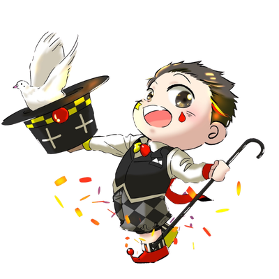
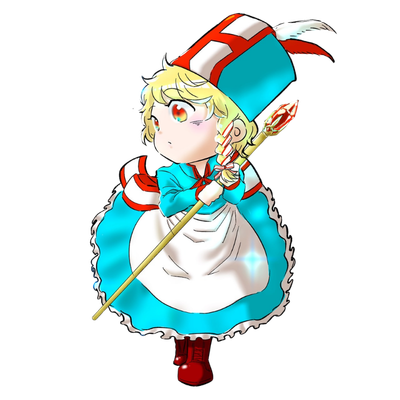
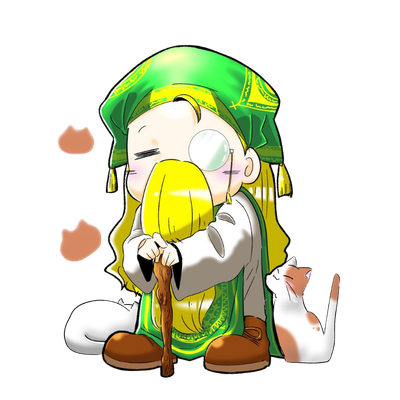
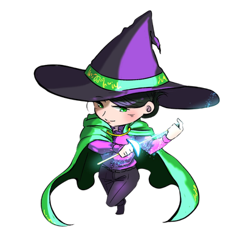
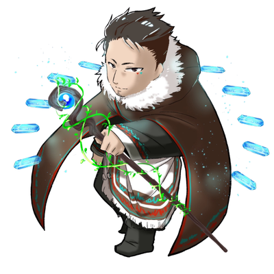
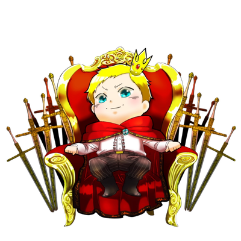

No.3 道化師
「僧侶（6）」と「道化師（3）」のこの恋は、「癒しと楽しさ」が自然に混ざり合う関係です。愛情深く相手を支えたい僧侶にとって、道化師の明るさや自由な発想は、日々に彩りを与えてくれる存在となるでしょう。
道化師の軽やかな言葉や行動に、僧侶は心を和ませてもらい、道化師もまた僧侶の優しさに安心感を覚えやすい相性です。相手を変えようとせず、お互いの違いを楽しめると、温かく心地よい愛へと育っていきます。
LIFE PATH NUMBER
No.6
慈愛の奉仕者
キーワード 🔑
奉仕、慈悲、養育者、人見知り、過干渉、頑固

「ありがとう！」
「あなたのおかげ」
「お節介すぎ」
「ぱっとしないね」
道化師・僧侶
長老
BASIC PERSONALITY
心優しく責任感・正義感が強い「僧侶」タイプといえます。その反面、律儀で「きちんとしなくては」と完璧主義な一面もあります。普段は「おっとり」「おおらか」という柔らかな印象を周りに与える癒しタイプです。
サービス精神旺盛な方が多く、人を喜ばせることが好きなタイプです。見返りを求めず人助けができる人が多い傾向にあります。徳を積みやすく、困った際は救いの手が差し伸べられやすい人です。
ただ、その気遣いを周囲の人へも強要する節があるため他人に厳しくなりすぎないよう気を付けてください。人と自分の境界をしっかりと決めておくことをおすすめします。自分自身が幸せになることで周りにもその幸せが波及していく——そう肝に銘じてください。
僧侶は「人に与えるのは得意」ですが「受け取ることが苦手」という人がとても多い傾向にあります。また母性を感じさせる特徴から、精神状態が家庭環境に大きく左右されます。なるべくストレスフリーで快適な環境で過ごすことを念頭に置きましょう。
FORTUNE
仕事に人類愛、夢、哲学を求めていくと発展しやすいですわ。
LOVE TYPE
数秘「6番」は、恋愛においてとても愛情深く、思いやりに満ちたタイプです。相手を大切に思う気持ちが強く、献身的に尽くす姿勢はまるで"恋人の太陽"のよう。
恋人が喜ぶ姿を見ることが自分の幸せと感じる人で、家庭的な感覚や安心感を求める傾向があります。恋愛のテーマは「調和」と「絆」。穏やかで居心地の良い関係を築くことを大切にします。
一方で、相手に尽くしすぎて自分を犠牲にしてしまうこともあるため、「自分の幸せ」も忘れないことがポイントです。理想の相手は、自分の愛情をしっかり受け止め、同じように思いやりを返してくれる人。6番の恋は、時間と共に深まり、人生を豊かにする安定した愛へと育っていきます。
COMPATIBILITY

「僧侶（6）」と「道化師（3）」のこの恋は、「癒しと楽しさ」が自然に混ざり合う関係です。愛情深く相手を支えたい僧侶にとって、道化師の明るさや自由な発想は、日々に彩りを与えてくれる存在となるでしょう。
道化師の軽やかな言葉や行動に、僧侶は心を和ませてもらい、道化師もまた僧侶の優しさに安心感を覚えやすい相性です。相手を変えようとせず、お互いの違いを楽しめると、温かく心地よい愛へと育っていきます。
「僧侶（6）」同士の組み合わせは、「安心感」と「思いやり」に満ちた穏やかな恋愛になりやすい関係です。どちらも愛情深く、相手を大切にしたい気持ちが強いため、自然と支え合い、深い信頼関係を築いていけるでしょう。
価値観や愛情表現も似ているため、一緒にいるほど落ち着きや居心地の良さを感じやすい相性です。優しさの中にも素直な気持ちを伝えることで、より深く、長く続く愛情へと発展していきます。

「僧侶（6）」と「長老（9）」の恋は、「支え合いながら魂を成長させる」ような深い関係になりやすい相性です。僧侶は長老の落ち着きや広い視野に惹かれ、長老は僧侶の優しさや献身的な愛情に安心感を覚えるでしょう。
お互いに思いやりを持ちながら、人生観や価値観を共有することで、精神的にも豊かな関係を築きやすい組み合わせです。適度な距離感を保ちながら向き合うことで、穏やかで深い愛へと育っていきます。
CHECK OTHERS
恋人・家族・友人の生年月日を入力して、
数秘タイプと相性をチェックしよう。
または、タイプを直接選ぶ
1
勇者

2
魔剣士
3
道化師
4
騎士
5
冒険者
6
僧侶
7
武闘家
8
将軍
9
長老

11
魔導士

22
王子
33
賢者
もっと詳しい相性を知りたいなら詳細レポートへ ↓
PREMIUM REPORT
数秘「僧侶」の本質をさらに深く知る、完全オーダーメイドのレポートです。
自分の強み・弱み・人生サイクルを徹底解析。